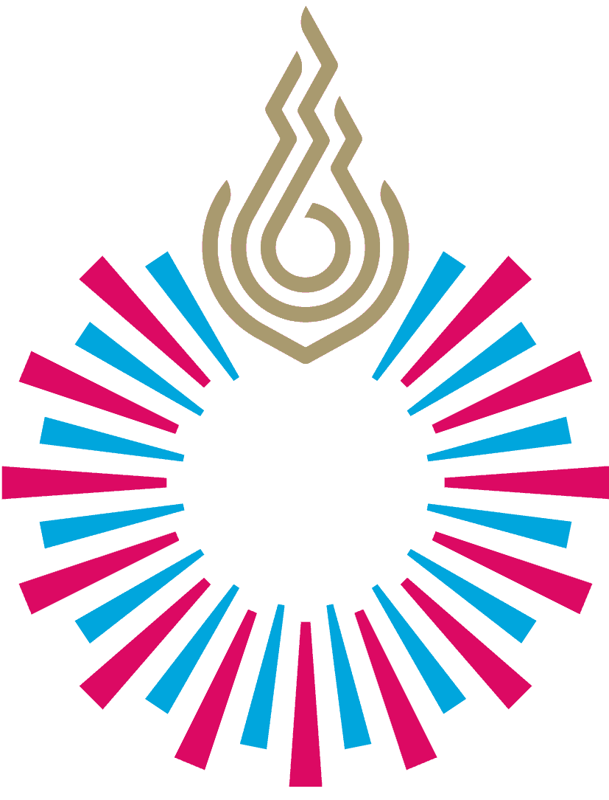

BACTOSCAN
Faculty of Nursing, RSU

Faculty of Nursing, RSU
พีรยา พิมพ์เภา
รหัสนักศึกษา 6801946 | นักศึกษาชั้นปีที่ 1
นัจมีน สังสกุล
รหัสนักศึกษา 6801953 | นักศึกษาชั้นปีที่ 1
กัลยารัตน์ ขวัญเพ็ชร์
รหัสนักศึกษา 6805636 | นักศึกษาชั้นปีที่ 1
นานีซา ยีหะมะ
รหัสนักศึกษา 6806390 | นักศึกษาชั้นปีที่ 1
ปภังกร พิชญะธนกร
อาจารย์ผู้สอน